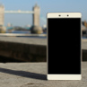

Nasa Kirim Makanan ke luar angkasa
Nasa mengirim makanan lezat dan bakteri keluar angkasa byang dikirim langsung dengan pesawat olangaling
Populer
Merawat keyboard itu tidak sulit, Anda perlu membersihkan menggunakan tisu basah dan kering kemudian usap secara merata.
Dalam penggunaan Smartphone, Anda perlu menghindari dari sinar matahari karena dapat berdampak buruk pada keawetan baterai.Smartphone ternyata bisa digunakan untuk menggantikan keyboard sebagai media untuk mengetik maupun yang lainnya.
Berita Terhangat

Sujud syukur acaracpenutupan diklat sar berlangsung dengan sakral dan penuh semangat dari para siswa baru